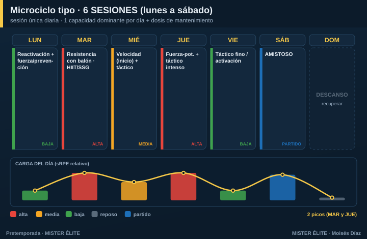

Plan · 6 SESIONES (lunes a sábado)
Para quién: semipro y amateur alto, 6 sesiones en sesión única de lunes a sábado. Pretemporada: 5-6 semanas.
Principio rector: mantienes casi todo el control del modelo de dobles, pero en sesiones únicas. Empieza la integración: una capacidad dominante por día, más una dosis corta de mantenimiento de otra. Aún caben los dos picos semanales.
Microciclo tipo

Un dominante por día: - Lunes — reactivación + fuerza/prevención (post-finde, carga baja). - Martes — pico 1: resistencia / HIIT con balón (juegos reducidos grandes). - Miércoles — táctico + velocidad al inicio (fresco), carga media. - Jueves — pico 2: fuerza-potencia + táctico intenso. - Viernes — táctico fino / activación (descarga hacia el partido). - Sábado — amistoso.
Cómo se reparte la carga
- Dos picos (martes y jueves) con descargas intercaladas. El viernes es ya tapering del amistoso.
- La resistencia va mayoritariamente con balón (juegos reducidos); el gimnasio se mantiene 2 días.
Fuerza, velocidad y prevención
- Fuerza 2 días/semana (lunes y jueves).
- Velocidad 1-2 días, al inicio de la sesión, con el jugador fresco (miércoles).
- Prevención en el calentamiento, casi a diario.
Amistosos
Los sábados, desde la semana 2. El viernes descarga, el domingo descansa.
Trabajo individual
Poco necesario; core y movilidad como deberes en los días de menor carga (lunes, viernes).
Progresión por fases (6 semanas tipo)
| Semana | Fase | Énfasis físico | Énfasis táctico | Sábado |
|---|---|---|---|---|
| 1 | Acumulación | Base aeróbica gran formato, fuerza general | Principios, estructura | Test / amistoso suave |
| 2 | Acumulación | Base + primer HIIT | Subprincipios, posesión | Amistoso 1 |
| 3 | Transformación | HIIT, inicio RSA | Fases de juego, ABP | Amistoso 2 |
| 4 | Transformación | RSA, velocidad | Automatismos | Amistoso 3 |
| 5 | Realización | Velocidad/potencia, mantener | Once tipo, ritmo real | Amistoso fuerte |
| 6 | Realización | Tapering | Plan de debut | Debut |